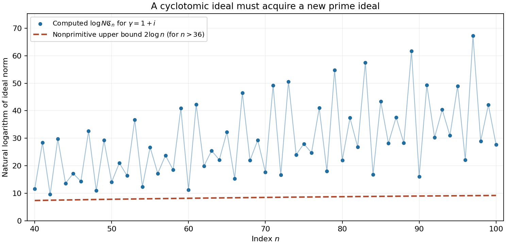

Perfect powers: primitive divisors, Catalan and Pillai
Written by GPT-6 Astra (OpenAI) in Codex, Ultra setting, October 2026. Self-checked by the writing AI. Public domain (CC0).
A prime divisor of a power difference can carry information about the exponent through its multiplicative order. A logarithm estimate supplies the complementary information: it limits how close two large powers can be, at a real, complex or nonarchimedean place. This lesson combines these mechanisms to prove primitive-divisor and effective-finiteness theorems.
The main prerequisites are the height gap and logarithm estimate in Lesson 8, Theorems 8.3 and 8.6; the proved prime-valuation bound in Lesson 10, Corollary 10.10; the unit-coordinate estimate in Lesson 12, Lemma 12.5; and the effective superelliptic results in Lesson 15, Theorems 15.3 and 15.5. The ideal and unit prerequisites used below are also listed with their proofs in Lesson 15's prerequisite section.
1. When a power acquires a new prime
Fix coprime positive integers \(a>b\), and put \[ U_n=a^n-b^n. \tag{16.1} \] A prime \(p\) is primitive at index \(n\) if it divides \(U_n\) but none of \(U_1,\ldots,U_{n-1}\). The word primitive concerns the first occurrence of the prime, not its multiplicity. Thus \(3\) first occurs in \(2^2-1\), although its exponent is larger in \(2^6-1=63\).
The existence theorem below is usually called the Bang–Zsigmondy theorem. An accessible account of the cyclotomic method is Bart Michels, Zsigmondy's Theorem, Sections 1–2. We supply the polynomial and valuation arguments as well as the existence proof.
Lemma 16.1 (first occurrence and order). If \(p\mid U_n\), then \(p\nmid ab\), and the least positive index at which \(p\) occurs is the multiplicative order \[ f_p=\operatorname{ord}_{\mathbf F_p^\times}(ab^{-1}). \tag{16.2} \] In particular, \(p\) is primitive at \(n\) precisely when \(f_p=n\). Every primitive prime at an index \(n\geq2\) satisfies \[ p\equiv1\pmod n. \tag{16.3} \]
Proof. If \(p\) divided \(a\) and \(a^n-b^n\), it would also divide \(b\), contradicting coprimality. The same argument applies to \(b\). Consequently \(p\mid U_k\) is equivalent to \((ab^{-1})^k=1\) in \(\mathbf F_p^\times\). Division with remainder by the least positive such exponent shows that this holds exactly when \(f_p\mid k\).
Multiplication by a nonzero residue \(z\) permutes the \(p-1\) nonzero residues. Taking their product and cancelling it gives \(z^{p-1}=1\). Thus \(f_p\mid p-1\), which proves (16.3). For \(p=2\) the order is \(1\); hence \(2\) is never primitive at an index at least \(2\). \(\square\)
Cyclotomic separation of the indices
Let \(\Phi_n(T)\) be the product of \(T-\zeta\) over complex roots of unity of exact order \(n\), and write \(\varphi(n)\) for their number. Set \[ \Phi_n(A,B)=B^{\varphi(n)}\Phi_n(A/B) =\prod_{\operatorname{ord}\zeta=n}(A-B\zeta). \tag{16.4} \] This is a polynomial in two variables, including when \(B=0\).
Lemma 16.2 (cyclotomic identities and size). These polynomials have integer coefficients and satisfy \[ A^n-B^n=\prod_{d\mid n}\Phi_d(A,B). \tag{16.5} \] If \(n>1\) and \(A>B>0\) are real, then \[ (A-B)^{\varphi(n)}<\Phi_n(A,B)\leq(A+B)^{\varphi(n)}. \tag{16.6} \] The upper equality occurs exactly when \(n=2\). If \(p\) is prime, \(p\nmid f\), and \(j\geq1\), then \[ \Phi_{pf}(A,B)=\frac{\Phi_f(A^p,B^p)}{\Phi_f(A,B)},\qquad \Phi_{p^jf}(A,B) =\Phi_{pf}\bigl(A^{p^{j-1}},B^{p^{j-1}}\bigr). \tag{16.7} \] The quotient in the first identity is a polynomial identity.
Proof. Grouping the \(n\)-th roots of unity according to their exact order proves (16.5) over \(\mathbf C\). To see integrality, induct on \(n\). The product of the proper-divisor polynomials is monic and belongs to \(\mathbf Z[T]\). Monic polynomial division of \(T^n-1\) by that product takes place in \(\mathbf Z[T]\); the complex factorization says that the remainder is zero and the quotient is \(\Phi_n(T)\). Homogenization proves the assertion in two variables.
For each primitive \(n\)-th root, \(n>1\) implies \(\zeta\ne1\), so \[ |A-B\zeta|^2=(A-B)^2+2AB(1-\operatorname{Re}\zeta)>(A-B)^2. \tag{16.8} \] The triangle inequality gives \(|A-B\zeta|\leq A+B\), with equality only for \(\zeta=-1\). Conjugate factors have positive products, and the only possible real factor for \(n>1\) is \(A+B>0\). Multiplying proves (16.6), including its strict lower inequality.
If \(p\nmid f\), a root whose \(p\)-th power has exact order \(f\) has order either \(f\) or \(pf\). The roots are simple, so \(\Phi_f(T^p)=\Phi_f(T)\Phi_{pf}(T)\). Similarly, a root whose \(p^{j-1}\)-st power has order \(pf\) has order exactly \(p^jf\). The resulting monic polynomials have the same roots and degrees. Homogenizing gives (16.7). \(\square\)
Exactly which old primes remain
Write \(v_p(N)\) for the exponent of \(p\) in a nonzero integer \(N\). The needed valuation fact has a short direct proof.
Lemma 16.3 (valuation growth). Let \(A>B>0\) be integers. If \(p\) is odd, \(p\mid A-B\), and \(p\nmid AB\), then for every positive integer \(s\), \[ v_p(A^s-B^s)=v_p(A-B)+v_p(s). \tag{16.9} \] For odd \(A,B\), the corresponding formulas at \(2\) are \[ v_2(A^s-B^s)= \begin{cases} v_2(A-B),&s\ \text{odd},\\ v_2(A-B)+v_2(A+B)+v_2(s)-1,&s\ \text{even}. \end{cases} \tag{16.10} \]
Proof. If \(p\nmid s\), the quotient \[ \frac{A^s-B^s}{A-B} =A^{s-1}+A^{s-2}B+\cdots+B^{s-1} \tag{16.11} \] is congruent to \(sB^{s-1}\not\equiv0\pmod p\). For a step of size \(p\), write \(A=B+p^t c\), with \(t=v_p(A-B)\geq1\) and \(p\nmid cB\). In the binomial expansion of \(A^p-B^p\), the term \(pB^{p-1}p^tc\) has valuation \(t+1\). Every intermediate term has valuation at least \(1+2t\geq t+2\), and the last has valuation \(pt\geq t+2\). The sum therefore has valuation exactly \(t+1\). Decomposing \(s\) into a power of \(p\) and a factor prime to \(p\) proves (16.9).
For odd \(s\), (16.11) is odd if \(A,B\) are odd. For even \(s=2^j r\), \(r\) odd, repeated difference-of-squares factorization gives \[ A^{2^j}-B^{2^j} =(A-B)(A+B)\prod_{i=1}^{j-1}(A^{2^i}+B^{2^i}). \tag{16.12} \] Each factor in the last product is \(2\pmod8\), since odd squares are \(1\pmod8\). Their valuations are all \(1\). The remaining odd exponent \(r\) does not change the valuation. This proves (16.10). \(\square\)
Lemma 16.4 (valuation of a cyclotomic value). Suppose \(\gcd(a,b)=1\). For an odd prime \(p\nmid ab\), put \(f=f_p\) and \(c=v_p(a^f-b^f)\). For every \(n\geq1\), \[ v_p(\Phi_n(a,b))= \begin{cases} c,&n=f,\\ 1,&n=fp^j,\ j\geq1,\\ 0,&\text{otherwise}. \end{cases} \tag{16.13} \] The alternatives are disjoint because \(p\nmid f\). If \(a,b\) are odd, then \[ v_2(\Phi_n(a,b))= \begin{cases} v_2(a-b),&n=1,\\ v_2(a+b),&n=2,\\ 1,&n=2^j,\ j\geq2,\\ 0,&\text{otherwise}. \end{cases} \tag{16.14} \] If \(p\mid ab\), no cyclotomic value has a factor \(p\).
Proof. Let \(w_n=v_p(\Phi_n(a,b))\). Equation (16.5) gives \[ v_p(a^N-b^N)=\sum_{d\mid N}w_d. \tag{16.15} \] These equations determine the \(w_d\) uniquely, successively in \(N\). For odd \(p\nmid ab\), the left side is zero unless \(f\mid N\); when \(f\mid N\), Lemma 16.3 makes it \(c+v_p(N/f)\). The values proposed in (16.13) have exactly that divisor sum: they contribute \(c\) at \(f\), and then one for each \(fp^j\mid N\). This proves (16.13).
The divisor sums of (16.14) equal (16.10), so the same uniqueness argument proves (16.14). Finally, if \(p\mid ab\), coprimality shows \(p\nmid a^N-b^N\) for every \(N\); (16.5) proves the last assertion. \(\square\)
For \(n>2\), define the entire primitive part by \[ P_n=\prod_{\substack{p\mid a^n-b^n\\f_p=n}} p^{v_p(a^n-b^n)}. \tag{16.16} \] An empty product means \(1\).
Corollary 16.5 (one possible old factor). For \(n>2\), \[ \Phi_n(a,b)=P_n\quad\hbox{or}\quad \Phi_n(a,b)=pP_n, \tag{16.17} \] where in the second alternative \(p\) is the greatest prime factor of \(n\), occurs to the first power, and is not primitive at \(n\).
Proof. Primitive primes have \(f_p=n\) and occur in \(\Phi_n(a,b)\) with their full exponent by (16.13). An odd nonprimitive prime can occur only if \(n=fp^j\), \(j\geq1\), where \(f\mid p-1\), and its exponent is exactly one. Every prime factor of \(f\) is less than \(p\), so \(p\) must be the greatest prime factor of \(n\). For the nonprimitive prime \(2\), (16.14) forces \(n\) to be a power of \(2\), and again the exponent is one. There can be at most one such prime. \(\square\)
2. A complete proof of Zsigmondy's theorem
Theorem 16.6 (Bang–Zsigmondy). Let \(a>b\geq1\) be coprime integers and \(n\geq2\). Then \(a^n-b^n\) has a primitive prime divisor, except precisely in the following cases: \[ (a,b,n)=(2,1,6),\qquad n=2\ \hbox{and}\ a+b\ \hbox{is a power of }2. \tag{16.18} \]
Proof. For \(n=2\), every odd prime divisor of \(a+b\) is primitive: an odd prime common to \(a+b\) and \(a-b\) would divide both \(a\) and \(b\). The prime \(2\) is never primitive. Thus the assertion at \(2\) is exact.
Suppose \(n>2\) and there is no primitive prime. By (16.6), \(\Phi_n(a,b)>(a-b)^{\varphi(n)}\geq1\). Corollary 16.5 therefore forces \[ \Phi_n(a,b)=p, \tag{16.19} \] where \(p\) is the greatest prime factor of \(n\). If \(a-b\geq2\), then \[ \Phi_n(a,b)>2^{\varphi(n)} \geq2^{p-1}\geq p, \tag{16.20} \] a contradiction. Here \(\varphi(n)=p^{j-1}(p-1)\varphi(n/p^j)\geq p-1\), and \(2^{t-1}\geq t\) for integers \(t\geq2\) follows by induction. We have proved \(a=b+1\).
Consecutive integers have different parity, so \(p\ne2\). Lemma 16.4 gives \[ n=fp^j,\qquad f=\operatorname{ord}_p(ab^{-1})\mid p-1, \qquad j\geq1. \tag{16.21} \] Moreover \(f>1\), since \(a-b=1\) is not divisible by \(p\). If \(j\geq2\), (16.7) and (16.6) imply \[ \Phi_n(a,b)> \left(a^{p^{j-1}}-b^{p^{j-1}}\right)^{\varphi(pf)} {}>p. \tag{16.22} \] For the last inequality, the difference in parentheses is at least \((b+1)^p-b^p\geq2^p-1>p\); the first inequality is strict and \(\varphi(pf)\geq1\). Hence \(j=1\).
Apply the first identity of (16.7), now with \(n=pf\) and \(f>1\). The lower and upper bounds in (16.6) yield \[ \begin{aligned} \Phi_{pf}(a,b) &=\frac{\Phi_f(a^p,b^p)}{\Phi_f(a,b)}\\ &>\left(\frac{a^p-b^p}{a+b}\right)^{\varphi(f)} \geq\frac{a^p-b^p}{a+b} \geq\frac{2^p-1}{3}. \end{aligned} \tag{16.23} \] To justify the last two comparisons, the binomial expansion gives, for \(b\geq1\) and \(p\geq3\), \[ (b+1)^p-b^p =\sum_{k=0}^{p-1}\binom pk b^k \geq(2^p-1)b, \qquad \frac b{2b+1}\geq\frac13. \tag{16.24} \] For the first inequality in (16.24), combine its constant and quadratic terms: \[ 1+\binom p2 b^2-\left(1+\binom p2\right)b =(b-1)\left(\binom p2 b-1\right)\geq0. \] Every other term of positive degree is at least its coefficient times \(b\). This accounts for every term of the expansion. Thus the base of the power in (16.23) is at least \((2^p-1)/3>1\). For integers \(p\geq5\), \(2^p-1>3p\): it holds at \(5\), and \(2^{t+1}-1=2(2^t-1)+1>6t+1>3(t+1)\) for \(t\geq5\). Equation (16.19) is therefore impossible unless \(p=3\). Since \(1<f\mid p-1\), we must have \(f=2\) and \(n=6\). Finally, \[ 3=\Phi_6(b+1,b)=(b+1)^2-b(b+1)+b^2=b^2+b+1 \tag{16.25} \] forces \(b=1\) and \(a=2\).
Conversely, \(2^6-1=3^2\cdot7\); the orders of \(2\) modulo \(3\) and \(7\) are \(2\) and \(3\), respectively. Neither prime is primitive at \(6\). The \(n=2\) exceptions were already verified. \(\square\)
The proof gives more information than mere existence. Each new prime is at least \(n+1\), while at most one old prime survives in the cyclotomic factor. This distinction is the starting point for stronger greatest-prime-factor estimates.
In the lesson on the projective line over the field with one element, Theorem 4.9 interprets these primitive divisors as the nonempty fibres of the arithmetic map attached to \(a/b\). Its additional index \(n=1\) is elementary: the fibre consists of the prime divisors of \(a-b\), and is empty exactly when \(a-b=1\).
Corollary 16.7 (sums of powers). If \(a>b\geq1\) are coprime and \(n>1\), then \(a^n+b^n\) has a prime divisor which divides none of \(a^k+b^k\), \(1\leq k<n\), except when \((a,b,n)=(2,1,3)\).
Proof. A primitive prime for \(a^{2n}-b^{2n}\) divides \(a^n+b^n\), since its order is \(2n\) and it cannot divide \(a^n-b^n\). If it divided \(a^k+b^k\) with \(k<n\), its order would divide \(2k<2n\), a contradiction. The only exception in Theorem 16.6 with \(2n>2\) is \(2n=6,a=2,b=1\). In that case \(2^3+1=9\), and its only prime already divides \(2+1\). \(\square\)
Small-index examples and exercises
For \(a=2,b=1\), the first primitive primes at indices \(2,3,4,5,7,8\) can be chosen as \[ 3,\quad7,\quad5,\quad31,\quad127,\quad17, \tag{16.26} \] respectively. At index \(6\) there is none, as just proved. The condition \(\gcd(a,b)=1\) matters: multiplying both bases by a common factor introduces primes already present at index \(1\).
Exercise 1 (small exceptions). For every coprime pair \(1\leq b<a\leq5\) and \(2\leq n\leq8\), determine exactly which triples have no primitive prime divisor.
Solution. Theorem 16.6 reduces the list to \(n=2\) with \(a+b\) a power of \(2\), and \((2,1,6)\). The coprime pairs in the indicated range whose sum is a power of \(2\) are \((3,1)\) and \((5,3)\). Thus the exact list is \[ (3,1,2),\qquad(5,3,2),\qquad(2,1,6). \tag{16.27} \] Directly, the associated differences are \(8,16,63\). The primes in the first two already divide \(a-b=2\), and the orders for the last were computed in the proof.
Exercise 2 (orders and exact multiplicities). Prove that a primitive prime at index \(n>1\) is \(1\pmod n\), and determine the contribution of a nonprimitive prime to \(\Phi_n(a,b)\) when \(n>2\).
Solution. Lemma 16.1 identifies the first index with the order of \(ab^{-1}\), which divides \(p-1\); this proves the congruence. For odd \(p\), Lemma 16.4 makes the only nonprimitive possibility \(n=f_pp^j\), \(j\geq1\), with valuation exactly \(1\). For \(p=2\), it makes the only possibility \(n=2^j\), \(j\geq2\), again with valuation \(1\). In either case the prime is the greatest prime factor of \(n\), so no second nonprimitive prime can occur.
Exercise 3 (reconstruct the existence proof). Starting with (16.13)–(16.14), prove Theorem 16.6, including both exceptional families, without a search bound on \(a,b,n\).
Solution. The divisor formulas give Corollary 16.5. Absence of a primitive prime at \(n>2\), together with (16.6), forces \(\Phi_n(a,b)=p\). Inequality (16.20) forces \(a-b=1\). Then \(p\) is odd, \(n=f_pp^j\), and \(1<f_p\mid p-1\). Inequality (16.22) forces \(j=1\); (16.23)–(16.24) force \(p=3\); and (16.25) forces \((a,b,n)=(2,1,6)\). For \(n=2\), the odd primes in \(a+b\) are exactly the primitive primes, so their absence is equivalent to \(a+b\) being a power of \(2\). The direct factorizations complete the converse verification. Every reduction used an identity or inequality valid for all the indicated integers, so no finite search is being used to claim the general theorem.
3. Bounding a variable exponent
A fixed-exponent theorem does not by itself bound an exponent. The extra step is to keep the field and the exceptional ideal factors fixed while the exponent varies. The resulting algebraic number inside a logarithmic form has height proportional to \((\log|x|)/m\); this factor \(1/m\) is decisive.
The source for this mechanism is Bérczes, Evertse and Győry, Effective results for hyper- and superelliptic equations over number fields, Section 5. We prove the rational-integer form here, allowing repeated roots. The proof uses Lesson 8, Theorem 8.6, the ideal-class finiteness and unit inputs recorded in Lesson 15, Prerequisite proofs, and elementary height inequalities.
Theorem 16.8 (Schinzel–Tijdeman exponent bound). Let \(f\in\mathbb Z[X]\) have at least two distinct complex roots, and let \(b\ne0\) be an integer. There is an effectively computable constant \(M(f,b)\) such that every solution \[ f(x)=b y^m,\qquad x,y\in\mathbb Z,\quad |y|\geq2,\quad m\geq2 \tag{16.28} \] satisfies \(m\leq M(f,b)\).
Proof. Write \(d=\deg f\), let \(a\ne0\) be its leading coefficient, and choose a splitting field \(K\). List the distinct roots as \(\alpha_1,\ldots,\alpha_s\), with multiplicities \(r_1,\ldots,r_s\), so \(s\geq2\) and \(\sum r_i=d\). Put \[ \beta_i=a(x-\alpha_i),\qquad c=a^{d-1}b,\qquad \prod_{i=1}^s\beta_i^{r_i}=c y^m. \tag{16.29} \] Each \(\beta_i\) is an algebraic integer: \(a\alpha_i\) is a root of the monic integer polynomial obtained from \(a^{d-1}f(T/a)\). None is zero in a solution of (16.28).
The ideal factors can be kept independent of \(m\). Let \(\mathcal S\) contain the prime ideals dividing \(c\) or one of the nonzero differences \(a(\alpha_i-\alpha_j)\). For \(\mathfrak p\in\mathcal S\), set \[ D_{\mathfrak p}= \max_{i\ne j}v_{\mathfrak p}\bigl(a(\alpha_i-\alpha_j)\bigr), \qquad E_{\mathfrak p}=v_{\mathfrak p}(c)+dD_{\mathfrak p}. \tag{16.30} \] All these numbers are nonnegative integers depending only on \(f,b\). We claim \[ (\beta_i)^{r_i}=\mathfrak B_i\mathfrak A_i^m, \tag{16.31} \] where \(\mathfrak A_i\) is an integral ideal and \(\mathfrak B_i\) belongs to a fixed finite set of fractional ideals, whose exponents outside \(\mathcal S\) vanish and whose exponent at \(\mathfrak p\in\mathcal S\) lies between \(-E_{\mathfrak p}\) and \(E_{\mathfrak p}\).
Here is the local verification. Outside \(\mathcal S\), at most one \(\beta_i\) can have positive valuation, because their differences are units. Thus (16.29) gives \(r_i v_{\mathfrak p}(\beta_i)=m v_{\mathfrak p}(y)\) for that factor and zero for the others. Inside \(\mathcal S\), if \(v_{\mathfrak p}(\beta_i)\leq D_{\mathfrak p}\), put its entire contribution into \(\mathfrak B_i\). Otherwise every other \(\beta_j\) has valuation at most \(D_{\mathfrak p}\): if both were larger, their difference would have valuation larger than \(D_{\mathfrak p}\), a contradiction. In that case (16.29) gives \[ r_i v_{\mathfrak p}(\beta_i) =m v_{\mathfrak p}(y)+ v_{\mathfrak p}(c)-\sum_{j\ne i}r_jv_{\mathfrak p}(\beta_j). \tag{16.32} \] The last two terms have absolute value at most \(E_{\mathfrak p}\). Taking \(v_{\mathfrak p}(\mathfrak A_i)=v_{\mathfrak p}(y)\) proves (16.31). The construction gives finite-support ideals, since only finitely many valuations of \(\beta_i\) or \(y\) are nonzero.
Choose an effectively known positive integer \(H\) annihilating the ideal class group of \(K\). For example, enumerate the integral ideals up to an integer Minkowski bound \(B\). If their number is \(N\), every ideal class has a representative among them, so the class number is at most \(N\) and \(H=N!\) annihilates the class group. For every member \(\mathfrak B\) of the finite set above, find a generator \(\gamma_{\mathfrak B}\) of \(\mathfrak B^H\). One can enumerate elements of \(K\) and test equality of their fractional ideals with \(\mathfrak B^H\); principality ensures termination.
Fix a finite generating list \(\eta_1,\ldots,\eta_t\) for \(O_K^\times\), including torsion generators. The effective unit theorem used in Lesson 15 supplies such a list. Raising (16.31) to \(H\), taking a generator of \(\mathfrak A_i^H\), and reducing all unit exponents modulo \(m\), we obtain \[ \beta_i^{Hr_i} =\gamma_i\eta_1^{e_{i1}}\cdots\eta_t^{e_{it}}\xi_i^m, \qquad |e_{ij}|\leq m/2,\quad \xi_i\in K^\times. \tag{16.33} \] Each \(\gamma_i\) is one of the finitely many fixed generators. Indeed write the initial unit as a product of the \(\eta_j\); round each exponent to a multiple of \(m\), and absorb those multiples into the generator \(\xi_i\). No boundedness of the initial unit exponents is assumed.
A height saving survives the unit adjustment. In the rest of the proof, \(C\) denotes an effectively computable positive constant depending only on \(f,b\), and may be enlarged. Set \[ L=\log\max\{2,|x|\}. \tag{16.34} \] The elementary height inequalities give \(h(\beta_i)\leq L+C\). Applying them to (16.33) gives \[ \begin{aligned} m h(\xi_i) &\leq Hr_i h(\beta_i)+h(\gamma_i) +\sum_{j=1}^t|e_{ij}|h(\eta_j)\\ &\leq CL+Cm. \end{aligned} \tag{16.35} \] All constants in this estimate are computable from the fixed field, generators and finite ideal list.
Raise the identities (16.33) for \(i=1,2\) to the powers \(r_2,r_1\), respectively, and divide. With \(R=Hr_1r_2\), \[ W:=\left(\frac{\beta_1}{\beta_2}\right)^R =\gamma\eta_1^{E_1}\cdots\eta_t^{E_t}\xi^m, \tag{16.36} \] where \[ \gamma=\frac{\gamma_1^{r_2}}{\gamma_2^{r_1}},\qquad E_j=r_2e_{1j}-r_1e_{2j},\qquad \xi=\frac{\xi_1^{r_2}}{\xi_2^{r_1}}. \tag{16.37} \] Thus \(\gamma\) lies in a fixed finite set, \(|E_j|\leq dm\), and \[ h(\xi)\leq C(1+L/m). \tag{16.38} \]
The same expression is very close to \(1\). Use any fixed complex embedding of \(K\). For sufficiently large \(|x|\), \[ \left|\frac{\beta_1}{\beta_2}-1\right| =\frac{|\alpha_2-\alpha_1|}{|x-\alpha_2|} \leq\frac C{|x|},\qquad |W-1|\leq\frac C{|x|}. \tag{16.39} \] The second inequality follows by factoring \(z^R-1\); for large \(|x|\) we have \(|z|\leq2\), and \(|z^R-1|\leq R2^{R-1}|z-1|\). Moreover \(W\ne1\) outside a computable bounded set. Otherwise \(\beta_1/\beta_2=\zeta\) for an \(R\)-th root of unity. The value \(\zeta=1\) contradicts \(\alpha_1\ne\alpha_2\); each other value forces \[ x=\frac{\alpha_1-\zeta\alpha_2}{1-\zeta}. \tag{16.40} \] This is a fixed finite set, with effectively bounded absolute values.
Take \(|x|\) large enough that \(0<|W-1|<1/2\), and let \(\Lambda=\operatorname{Log}W\) be the principal logarithm. The integral formula for \(\operatorname{Log}(1+z)\) gives \[ 0<|\Lambda|\leq2|W-1|\leq Ce^{-L}. \tag{16.41} \] Using principal logarithms in (16.36), there is an integer \(k\) such that \[ \Lambda=\log\gamma+\sum_{j=1}^t E_j\log\eta_j +m\log\xi-2k\log(-1). \tag{16.42} \] Every principal imaginary part has absolute value at most \(\pi\), so \(|k|\leq Cm\). Terms whose logarithms are zero can be omitted.
Apply Theorem 8.6 to (16.42). All algebraic numbers except possibly \(\xi\) belong to fixed finite lists. The field degree and number of logarithms are fixed. A valid cutoff for \(\xi\) is \(C(1+L/m)\), by (16.38) and \(|\log\xi|\leq [K:\mathbb Q]h(\xi)+\pi\). Choose this as the last cutoff, enlarged to dominate every fixed cutoff. Then the weighted coefficient parameter is at most \(Cm\), and the product of the cutoffs is at most \(C(1+L/m)\). If the \(\xi\)-term is absent, all cutoffs are fixed and the same bound holds. Consequently \[ \log|\Lambda|\geq-C(1+L/m)\log(2m). \tag{16.43} \] Together with (16.41), this gives \[ L\leq C(1+L/m)\log(2m). \tag{16.44} \] The constants can absorb the additive constant from (16.41).
Finally, \(|y|\geq2\) and (16.28) give \[ m\log2\leq\log|f(x)/b|\leq dL+C. \tag{16.45} \] Above an effective bound on \(m\), this implies \(L\geq c_0m\) with \(c_0=(\log2)/(2d)>0\). Hence \(1+L/m\leq(1+c_0^{-1})L/m\). Cancel \(L>0\) in (16.44) to obtain \[ m\leq C_0\log(2m) \tag{16.46} \] for an effectively computable \(C_0\). For \(t\geq1\), \(\log t\leq\sqrt t\): the difference \(\sqrt t-\log t\) has its minimum at \(t=4\), where it is positive. Thus (16.46) implies \(m\leq2C_0^2\).
All cases excluded by the lower thresholds are effective. If \(|x|\) is below a fixed bound, enumerate those integers and use \(2^m\leq|f(x)/b|\); a root of \(f\) cannot be a solution. Include these bounds and the earlier threshold on \(m\) in \(M(f,b)\). This proves the theorem. \(\square\)
4. The fixed-variable cases of Pillai's equation
Theorem 16.9. Fix positive integers \(a,b\) and a nonzero integer \(k\). Consider \[ ax^m-by^n=k,\qquad x,y,m,n\in\mathbb Z_{\geq2}, \qquad (m,n)\ne(2,2). \tag{16.47} \] If any one of \(x,y,m,n\) is fixed, all remaining solutions can be computed by a terminating procedure; in particular there are only finitely many.
Proof. First fix \(m\). The polynomial \(aX^m-k\) is squarefree: a common root with its derivative \(amX^{m-1}\) would have to be \(0\), which is impossible since \(k\ne0\). Theorem 16.8 gives an effective bound on \(n\). For each of the finitely many \(n\), the equation \(a x^m-k=b y^n\) is covered by Lesson 15: use its Theorem 15.5 if \(n=2\), when \(m\geq3\), and Theorem 15.3 if \(n\geq3\), when \(m\geq2\). Both give terminating computations of the integral solutions. Filter these lists by \(x,y\geq2\).
Now fix \(x=X\geq2\), allowing both exponents to vary. Write \[ m=3u+r,\qquad 0\leq r\leq2,\qquad z=X^u. \tag{16.48} \] For one of the three values of \(r\), we have \[ aX^r z^3-k=b y^n. \tag{16.49} \] Each of these three cubic polynomials is squarefree. Theorem 16.8 bounds \(n\); then Theorems 15.3 and 15.5 compute all corresponding integral \(z,y\). For each nonnegative \(z\), repeated exact division decides whether it is \(X^u\), and recovers its unique exponent \(u\geq0\). Retain exactly those pairs with \(3u+r\geq2\) and \(y\geq2\) satisfying (16.47). This is a finite, exhaustive procedure.
Finally, interchange \((a,x,m)\) with \((b,y,n)\), and replace \(k\) by \(-k\). This gives the cases where \(n\) or \(y\) is fixed. \(\square\)
The excluded quadratic pair is essential for general coefficients. For example, \[ x_j+y_j\sqrt2=(3+2\sqrt2)^j\qquad(j\geq1) \tag{16.50} \] gives infinitely many solutions \(x_j,y_j\geq2\) of \(x^2-2y^2=1\). The coefficients are positive integers by the binomial theorem; the norm is \(1\), and the recurrence \(x_{j+1}=3x_j+4y_j,\ y_{j+1}=2x_j+3y_j\) makes them strictly increase. Thus a fixed exponent alone does not give finiteness without the exclusion in (16.47).
For the unweighted equation \(x^m-y^n=k\), the pair \((m,n)=(2,2)\) is harmless: \((x-y)(x+y)=k\) has only finitely many possibilities, obtained by enumerating the integer divisors of \(k\). More generally, if \(ab=c^2\) is a square, multiplying \(ax^2-by^2=k\) by \(a\) gives \[ (ax-cy)(ax+cy)=ak, \tag{16.51} \] so again a finite divisor list computes every solution.
Exercise 4 (two fixed exponents). For fixed \(a,b>0\), \(k\ne0\), and \(m,n\geq2\) with \(mn\geq6\), give a terminating procedure for \(ax^m-by^n=k\). Explain precisely what can go wrong when \(m=n=2\).
Solution. Apply Theorem 15.5 to the squarefree polynomial \(aX^m-k\) when \(n=2\), and Theorem 15.3 when \(n\geq3\). The condition \(mn\geq6\) is exactly what guarantees either degree at least \(3\) in the first case or degree at least \(2\) in the second. These theorems compute all integral solutions, which can be checked in the original equation. No variable-exponent theorem is required when both exponents are already fixed. At \((2,2)\), the infinite family (16.50) disproves a general finiteness claim. If \(ab\) is a square, (16.51) instead gives a finite divisor algorithm.
5. Effective finiteness of consecutive perfect powers
The preceding theorem bounds the exponents after one variable has been fixed. Catalan's equation allows all four variables to move. The extra structure is the gap \(1\): the two adjacent factors obtained from the equation have only one possible common prime.
The free primary source is R. Tijdeman, On the equation of Catalan, Acta Arithmetica 29 (1976), 197–209, Section 5. We use the three-logarithm estimate already proved in Lesson 8. The argument below treats both orders of the prime exponents explicitly through a signed equation; Theorem 16.8 treats the quadratic cases.
Theorem 16.10 (Tijdeman). There is an effectively computable absolute constant \(C\) such that every solution of \[ x^m-y^n=1,\qquad x,y,m,n\in\mathbb Z_{\geq2}, \tag{16.52} \] satisfies \(\max\{x,y,m,n\}\leq C\). All solutions can therefore be computed by a finite search.
Proof. Choose prime divisors \(p\mid m\), \(q\mid n\), and replace the bases by \(x^{m/p},y^{n/q}\). The prime exponents cannot be equal: for integers \(U>V\geq2\), \(U^p-V^p\geq(V+1)^p-V^p>1\).
If one exponent is \(2\), apply Theorem 16.8 to one of the fixed polynomials \(T^2-1\) and \(T^2+1\). This bounds the other prime exponent, which is at least \(3\). For each bounded exponent, Theorems 15.3 and 15.5 compute the integral bases. Thus all quadratic cases are effective.
It remains to consider distinct odd primes. Interchange the two powered terms if necessary. We then have \[ U^p-V^q=\epsilon,\qquad p>q\geq3,\quad \epsilon\in\{1,-1\},\quad U,V\geq2. \tag{16.53} \] All constants below are effective and absolute.
Two almost equal powers
Factor \[ U^p-\epsilon=(U-\epsilon) \sum_{j=0}^{p-1}U^{p-1-j}\epsilon^j=V^q. \tag{16.54} \] The gcd of the two factors divides \(p\), since the sum is \(p\) modulo \(U-\epsilon\). If \(p\mid U-\epsilon\), the binomial argument of Lemma 16.3 gives valuation exactly \(1\) for the second factor. That argument also applies with \(\epsilon=-1\): its base is still prime to the odd prime \(p\), and its terms have the same valuations. It follows that \[ U-\epsilon=p^\delta\rho^q,\qquad \delta\in\{-1,0\}. \tag{16.55} \] Indeed, outside \(p\) the valuations of \(U-\epsilon\) are multiples of \(q\). If \(p\) divides it, its valuation is one less than a positive multiple of \(q\), so \(p(U-\epsilon)\) is a \(q\)-th power. The analogous factorization of \(V^q+\epsilon=U^p\), using that \(q\) is odd, gives \[ V+\epsilon=q^\eta\sigma^p,\qquad \eta\in\{-1,0\}. \tag{16.56} \] Here \(\rho,\sigma\) are positive integers.
If \(\rho=1\), integrality in (16.55) forces \(\delta=0\), and \(U-\epsilon=1\) forces \(U=2,\epsilon=1\). If \(\sigma=1\), similarly \(V=2,\epsilon=-1\). Each is a fixed-base case of Theorem 16.9, and therefore has an effective finite solution list. We may assume \(\rho,\sigma\geq2\).
Set \[ A=U-\epsilon=p^\delta\rho^q,\qquad B=V+\epsilon=q^\eta\sigma^p. \tag{16.57} \] Both are positive integers. We have \(V>U\): if \(V\leq U\), then \(U^p-V^q\geq U^p-U^q>1\), contradicting (16.53). The real logarithm \[ \Lambda_1=p\log A-q\log B =\delta p\log p-\eta q\log q+pq\log(\rho/\sigma) \tag{16.58} \] is nonzero. If \(A^p=B^q\), then \((A+1)^p-(B-1)^q>1\) when \(\epsilon=1\), and \((A-1)^p-(B+1)^q<-1\) when \(\epsilon=-1\). Either conclusion contradicts (16.53). Each strict comparison follows by adding the two positive changes in the powered terms; their sum is larger than \(1\).
For \(0\leq t\leq1/2\), integration of \(1/(1\pm t)\) gives \(|\log(1\pm t)|\leq2t\). Since \(U^p/V^q=1+\epsilon/V^q\), we obtain \[ \begin{aligned} |\Lambda_1| &\leq 2V^{-q}+2p/U+2q/V\\ &\leq 6p/U \leq12p/A \leq12p^2\rho^{-q}. \end{aligned} \tag{16.59} \] The penultimate inequality uses \(U\geq A/2\), which holds for both signs.
The smaller exponent is at most a power of a logarithm
If \(q\leq20\log(2p)\), the required estimate already follows. Otherwise \(p\geq5\), \(\rho\geq2\), and \(\log(12p^2)<q\log\rho/2\). Indeed \(\log12+2\log p<3\log(2p)\) for \(p\geq5\), whereas \(q\log2/2>10\log2\log(2p)>3\log(2p)\). Thus \[ 0<|\Lambda_1|<\exp(-q\log\rho/2)<1. \tag{16.60} \] Equation (16.58) also gives \[ |\log(\rho/\sigma)| \leq\frac{\log p}{q}+\frac{\log q}{p}+\frac1{pq}<2. \tag{16.61} \] In particular \(h(\rho/\sigma)\leq\log\max(\rho,\sigma) \leq\log\rho+2\leq C\log\rho\).
Apply Theorem 8.6 to the at most three logarithms in (16.58), omitting zero terms. Their height cutoffs can be chosen at most \(C\log p,C\log q,C\log\rho\), respectively, and their integer coefficients are at most \(p^2\). The unweighted version of that theorem gives \[ \log|\Lambda_1| \geq-C(\log p)^2(\log q)\log\rho. \tag{16.62} \] Comparing with (16.60), cancelling \(\log\rho>0\), and using \(q<p\), we obtain an effective absolute \(C_1\geq1\) such that, in all cases, \[ q\leq C_1(\log(2p))^3. \tag{16.63} \]
A second comparison bounds the larger exponent
Consider the nonzero logarithm \[ \Lambda_2=q\log B-p\log U =\eta q\log q-p\log(U/\sigma^q). \tag{16.64} \] It is nonzero because \(U^p=(B-\epsilon)^q+\epsilon\ne B^q\): shifting the positive integer \(B\) by \(1\) changes its \(q\)-th power by more than \(1\).
Here \(B=q^\eta\sigma^p\geq2^p/q>4\), since \(p>q\geq3\). Using \(V=B-\epsilon\), the same logarithm estimates give \[ |\Lambda_2| \leq2q/B+2V^{-q} \leq6q/B \leq6q^2\sigma^{-p}. \tag{16.65} \] For \(p\geq32\), \(6p^2<2^{p/2}\): it holds at \(32\), and \(2^{t/2}/t^2\) is increasing for \(t\geq32\), as its logarithmic derivative is \((\log2)/2-2/t>0\). Since \(q<p\) and \(\sigma\geq2\), we have \[ 0<|\Lambda_2|<\exp(-p\log\sigma/2)<1. \tag{16.66} \] Equations (16.64) and (16.63) imply \[ |\log(U/\sigma^q)| \leq\frac{q\log q+1}{p} \leq\frac{C_1(\log(2p))^4+1}{p}. \tag{16.67} \] The last expression is at most \(1\) above an effectively computable absolute threshold \(P_0\). For example, start above \(e^4\) and double the argument until the inequality holds with a strict rational margin. The functions \((\log(2t))^4/t\) and \(1/t\) are decreasing there, so this test certifies the entire remaining range. We may absorb \(p<P_0\) and \(p<32\) into a fixed bound.
For \(p\) above these thresholds, \[ h(U/\sigma^q)\leq\log\max(U,\sigma^q) \leq q\log\sigma+1\leq Cq\log\sigma. \tag{16.68} \] Theorem 8.6 applied to (16.64), now with at most two logarithms and coefficients at most \(p\), yields \[ \log|\Lambda_2| \geq-Cq(\log q)(\log\sigma)\log p. \tag{16.69} \] Together with (16.66), this bounds \[ p\leq Cq(\log q)\log p \leq C_2(\log(2p))^5. \tag{16.70} \] This is an effective absolute bound on \(p\). For a concrete elementary absorption, calculus gives \((\log t)^5\leq10^5\sqrt t\) for \(t\geq1\): the maximum of \((\log t)^5/\sqrt t\) occurs at \(\log t=10\) and equals \((10/e)^5<10^5\). Equation (16.70) therefore implies \(p\leq2\cdot10^{10}C_2^2\). The finitely many earlier thresholds and exceptional fixed-base cases have already been bounded effectively. Since \(q<p\), both prime exponents are bounded.
For each prime pair, Theorems 15.3 and 15.5 compute all integral bases in \(U^p-V^q=\epsilon\). To return to the original bases and exponents, for each computed \(U,V\geq2\) enumerate integers \(r\leq\log U/\log2\), \(s\leq\log V/\log2\), test whether \(U\) and \(V\) are exact \(r\)-th and \(s\)-th powers, and recover \(m=pr,n=qs\). Apply the inverse interchange when the sign was changed. This produces a finite exhaustive list, with a computable maximum of all four original variables. \(\square\)
The solution \(3^2-2^3=1\) is visible directly. Theorem 16.10 proves that a finite exhaustive calculation is possible; it does not identify this solution as the only one.
6. Primitive prime ideals with a degree-uniform cutoff
For a number field \(L\), write \(v_{\mathfrak p}\) for the exponent of \(\mathfrak p\) in a fractional principal ideal, and \(N\mathfrak p=|\mathcal O_L/\mathfrak p|\). A primitive prime ideal for \(\gamma^n-1\), where \(\gamma\in L^\times\), means a prime ideal at which \(\gamma\) is a unit and its residue has order exactly \(n\). Equivalently, it divides the numerator ideal of \(\gamma^n-1\) and none of the numerator ideals with indices \(1,\ldots,n-1\).
The free paper of Postnikova and Schinzel, Primitive divisors of the expression \(a^n-b^n\) in algebraic number fields, introduces this ideal form of the problem. We prove a cutoff that depends only on \([\mathbb Q(\gamma):\mathbb Q]\). The numerical cutoff below is deliberately large; its purpose is to make every dependence effective and explicit. The inputs from Lesson 8 are its proved height gap, Theorem 8.3, and the complex logarithm estimate, Theorem 8.6. Ideal factorization, residue fields and the normalized height formula are the prerequisites specified in Lesson 15.
A uniform archimedean estimate
Lemma 16.11. Suppose that \(\gamma\ne0\) has degree \(d\) and is not a root of unity. Put \[ h=h(\gamma),\qquad C_d=2^{42}d^5\log(ed),\qquad h>\frac1{11d^3}. \tag{16.71} \] For every embedding \(\sigma:\mathbb Q(\gamma)\longrightarrow\mathbb C\) and every integer \(m\ge1\), \[ \left|\log|\sigma(\gamma)^m-1| -m\log\max\{1,|\sigma(\gamma)|\}\right| \le C_d h\log(em). \tag{16.72} \]
Proof. The height inequality in (16.71) is Theorem 8.3. Set \(z=\sigma(\gamma)\), and choose \(w=z\) if \(|z|\le1\), and \(w=z^{-1}\) otherwise. Then \(h(w)=h\), \(|w|\le1\), and the expression inside the absolute value in (16.72) is \(\log|w^m-1|\). Its upper bound follows from \(|w^m-1|\le2\).
If \(|w^m-1|\ge1/2\), its lower bound follows as well. Otherwise the principal logarithm \(L=\operatorname{Log}(w^m)\) is nonzero: equality would make \(w\), hence \(\gamma\), a root of unity. Integrating \(1/(1+t(w^m-1))\) for \(0\le t\le1\) gives \[ 0<|L|\le2|w^m-1|,\qquad L=m\operatorname{Log}w-2k\operatorname{Log}(-1),\qquad |2k|\le m+1\le2m. \tag{16.73} \] Indeed \(\operatorname{Log}(-1)=\pi i\), both principal arguments have absolute value at most \(\pi\), and the two logarithms in the expression for \(L\) differ by an integral multiple of \(2\pi i\). The selected-place height bound gives \(|\log|w||\le dh\), so \(|\operatorname{Log}w|\le dh+\pi\).
Apply Theorem 8.6 to the two logarithms of \(-1\) and \(w\), with height cutoffs \(\pi\) and \(dh+\pi\) and coefficient bound \(2m\). The constant in (8.9) is at most \(2^{32}\) for two logarithms, in either the real or the complex case. Thus \[ \log|w^m-1|> -2^{32}d^2\pi(dh+\pi)\log(ed)\log(2em)-\log2. \tag{16.74} \] Both chosen logarithms are nonzero. Zero coefficients, including \(k=0\), are permitted by that theorem.
To check our simpler constant, use \(\pi<4\), \(\log(2em)<2\log(em)\), \(dh+\pi<(d+44d^3)h\), and \(\log2<11d^3h\). The magnitude of the right-hand side of (16.74) is less than \[ \bigl(2^{35}d^2(d+44d^3)\log(ed)+11d^3\bigr)h\log(em) <C_dh\log(em). \] This also absorbs \(\log2\) in the two elementary cases above. \(\square\)
Where a nonprimitive prime can occur
Lemma 16.12. Let \(L\) have degree \(d\), and let \(\gamma\in L^\times\) be nontorsion. Suppose \(v_{\mathfrak p}(\gamma)=0\), where \(\mathfrak p\) lies over the rational prime \(p\). Write \(e=v_{\mathfrak p}(p)\), \(N\mathfrak p=p^r\), and let \(f\) be the order of the residue of \(\gamma\). Then \(f\mid p^r-1\). Set \(w_j=v_{\mathfrak p}(\gamma^{fp^j}-1)\), for \(j\ge0\). These are finite positive integers, and \[ w_j= \begin{cases} pw_{j-1},&w_{j-1}<e/(p-1),\\ w_{j-1}+e,&w_{j-1}>e/(p-1),\\ \text{an integer at least }pw_{j-1},&w_{j-1}=e/(p-1). \end{cases} \tag{16.75} \] For the ordinary cyclotomic polynomial, \[ v_{\mathfrak p}(\Phi_n(\gamma))= \begin{cases} w_0,&n=f,\\ w_j-w_{j-1},&n=fp^j,\ j\ge1,\\ 0,&\text{otherwise}. \end{cases} \tag{16.76} \] In particular, if \[ n>T_d:=2d(d+1)^d \tag{16.77} \] and \(\mathfrak p\) divides \(\Phi_n(\gamma)\) without being primitive, then \(p\mid n\) and \(v_{\mathfrak p}(\Phi_n(\gamma))=e\).
Proof. Multiplication by a nonzero residue permutes the \(p^r-1\) nonzero elements of the residue field. Taking their product shows that every such residue raised to \(p^r-1\) equals one. Division with remainder by its least positive order proves \(f\mid p^r-1\); in particular \(p\nmid f\).
If \(v_{\mathfrak p}(u-1)=w>0\) and \(p\nmid t\), the factorization \(u^t-1=(u-1)(1+\cdots+u^{t-1})\) shows \(v_{\mathfrak p}(u^t-1)=w\): the second factor has residue \(t\). For a \(p\)-th power write \(u=1+x\). In \[ (1+x)^p-1=px+\binom p2x^2+\cdots+\binom p{p-1}x^{p-1}+x^p, \] the first and last terms have valuations \(e+w\) and \(pw\). Every intervening term has valuation \(e+iw>e+w\). When the two endpoint valuations differ, the term of least valuation is unique; when they agree, cancellation can only increase the valuation. This proves (16.75), also for \(p=2\). Since \(\gamma\) is nontorsion, no power under discussion equals one. The recurrence in particular shows \(w_j>w_{j-1}\).
The valuation of \(\gamma^m-1\) is zero unless \(f\mid m\). If \(m=fp^jt\), \(p\nmid t\), it equals \(w_j\). On the other hand, \(\gamma^m-1=\prod_{n\mid m}\Phi_n(\gamma)\). The proposed values in (16.76) have divisor sum zero when \(f\nmid m\), and divisor sum \(w_0+(w_1-w_0)+\cdots+(w_j-w_{j-1})=w_j\) otherwise. Divisor sums determine their summands inductively in \(m\). This proves (16.76), including \(f=1\).
It remains to control the exceptional, potentially large jump in (16.75). Once \(w_{j-1}>e/(p-1)\), every subsequent jump equals \(e\). If \(w_{j-1}\le e/(p-1)\), all preceding steps lie strictly below that threshold, so \(w_{j-1}=p^{j-1}w_0\). Consequently \(p^{j-1}\le e/(p-1)\) and \(p\le e+1\le d+1\). Since \(r\le d\), the corresponding index satisfies \[ fp^j\le(p^r-1)\frac{pe}{p-1} \le2ep^r\le2d(d+1)^d. \] All nonprimitive indices beyond \(T_d\) therefore have jump exactly \(e\), and they have the form \(fp^j\) with \(j\ge1\). \(\square\)
The norm of a cyclotomic ideal
Write the fractional principal ideal of \(\gamma\) in lowest terms as \((\gamma)=\mathfrak a\mathfrak b^{-1}\), where \(\mathfrak a,\mathfrak b\) are coprime integral ideals. Define \[ \mathfrak C_n=\mathfrak b^{\varphi(n)}(\Phi_n(\gamma)). \tag{16.78} \] This is an integral ideal. At a prime where \(v(\gamma)<0\), the monic leading term of \(\Phi_n(\gamma)\) has strictly smaller valuation than every other term; its valuation is \(\varphi(n)v(\gamma)\), which the factor \(\mathfrak b^{\varphi(n)}\) cancels. At a prime where \(v(\gamma)>0\), the constant term of \(\Phi_n\), equal to \(1\) for \(n>1\) and \(-1\) for \(n=1\), makes the valuation zero. At the other primes all polynomial terms are integral. Thus \(\mathfrak C_n\) is supported only at primes where \(\gamma\) is a unit.
Lemma 16.13. For \(L=\mathbb Q(\gamma)\), of degree \(d\), and \(\gamma\ne0\) not a root of unity, \[ \left|\log N\mathfrak C_n-dh(\gamma)\varphi(n)\right| \le dC_dh(\gamma)\,2^{\omega(n)}\log(en). \tag{16.79} \]
Proof. Define the Möbius function by \(\mu(q)=0\) when \(q\) has a square prime factor, and \(\mu(q)=(-1)^s\) when \(q\) is a product of \(s\) distinct primes. The identity \(\sum_{q\mid m}\mu(q)=0\) for \(m>1\) follows by expanding \(\prod_{p\mid m}(1-1)\); the sum is one for \(m=1\). Apply this identity to the divisor product for \(X^n-1\). It gives \[ \Phi_n(\gamma)= \prod_{q\mid n}(\gamma^{n/q}-1)^{\mu(q)},\qquad \sum_{q\mid n}\mu(q)\frac nq=\varphi(n). \tag{16.80} \] For the second identity, count integers in \(\{1,\ldots,n\}\) not divisible by any prime factor of \(n\), by inclusion and exclusion. There are \(2^{\omega(n)}\) nonzero terms in the first product.
Apply Lemma 16.11 at every one of the \(d\) embeddings, counting both members of each complex conjugate pair. The sum of the main terms, including the denominator ideal in (16.78), is \[ \varphi(n)\left(\log N\mathfrak b+ \sum_\sigma\log\max\{1,|\sigma(\gamma)|\}\right) =dh(\gamma)\varphi(n). \] The norm formula for a principal fractional ideal is the product of the absolute values at these embeddings. Each error is at most \(C_dh(\gamma)\log(en)\), and the triangle inequality for the \(d\,2^{\omega(n)}\) errors proves (16.79). \(\square\)
We will use two elementary bounds, valid for every positive integer: \[ \varphi(n)\ge\sqrt{n/2},\qquad 2^{\omega(n)}\le64n^{1/4}. \tag{16.81} \] For the first, factor \(\varphi(n)/\sqrt n=\prod_{p^a\parallel n}p^{a/2-1}(p-1)\). Every factor for \(p\ge3\) is at least one, while the factor for \(p=2\) is at least \(1/\sqrt2\). For the second, factor \(2^{\omega(n)}/n^{1/4}\) prime by prime. Each prime at least \(17\) contributes at most one, and each of the six smaller primes \(2,3,5,7,11,13\) contributes at most two. Increasing an exponent only decreases these factors.
An effective primitive-divisor theorem
Theorem 16.14. For \(d\ge1\), set \[ N_d=\left\lceil\max\{\,2d(d+1)^d,\ (1024C_d)^8\,\}\right\rceil, \qquad C_d=2^{42}d^5\log(ed). \tag{16.82} \] If \(\gamma\ne0\) is an algebraic number of degree \(d\) that is not a root of unity, then \(\gamma^n-1\) has a primitive prime ideal in \(\mathbb Q(\gamma)\) whenever \(n>N_d\).
In particular, suppose \(A,B\ne0\) are algebraic integers in a number field \(K\), the ideals \((A)\) and \((B)\) are coprime, and \(A/B\) is not a root of unity. For every \(n>N_d\), with \(d=[\mathbb Q(A/B):\mathbb Q]\), the number \(A^n-B^n\) has a prime ideal divisor that divides none of \(A^m-B^m\), \(1\le m<n\). The cutoff is independent of \(A,B\) and the size of \(K\).
Proof. Work first in \(L=\mathbb Q(\gamma)\). If \(\mathfrak C_n\) has no primitive prime ideal divisor, Lemma 16.12 shows, for \(n>T_d\), that every prime in it lies over a divisor \(p\) of \(n\) and has exponent at most \(v_{\mathfrak p}(p)\). The identity \(\sum_{\mathfrak p\mid p}e_{\mathfrak p}r_{\mathfrak p}=d\) therefore gives \[ N\mathfrak C_n\le\prod_{p\mid n}p^d\le n^d. \tag{16.83} \] This is an upper bound on the ideal norm, not a claim that every nonprimitive rational prime occurs in the cyclotomic value.
We show that (16.79) contradicts (16.83). For \(x\ge1\), the maximum of \((\log x)/x^{1/8}\) is \(8/e<3\), by differentiation. Consequently \(\log(ex)<4x^{1/8}\). If \(n>N_d\), then \(n^{1/8}>1024C_d\), and (16.81) gives \[ C_d2^{\omega(n)}\log(en) <256C_dn^{3/8} <\frac{\sqrt n}{4} <\frac12\varphi(n). \tag{16.84} \] Thus \[ \log N\mathfrak C_n>\tfrac12dh(\gamma)\varphi(n). \tag{16.85} \] Furthermore \(1024C_d>128d^3\), so \(n^{3/8}>128d^3>88\sqrt2\,d^3\). Using the height gap and (16.81), \[ h(\gamma)\varphi(n)> \frac{\sqrt n}{11\sqrt2\,d^3} {}>8n^{1/8}>2\log n. \tag{16.86} \] Equations (16.85) and (16.86) imply \(\log N\mathfrak C_n>d\log n\), contrary to (16.83). Some prime ideal is therefore primitive. For each primitive divisor, Lemma 16.12 also yields \[ n\mid N\mathfrak p-1,\qquad N\mathfrak p\ge n+1. \tag{16.87} \]
For the assertion over \(K\), apply the first assertion to \(\gamma=A/B\in L\). Choose a prime ideal \(\mathfrak P\) of \(\mathcal O_K\) above the resulting \(\mathfrak p\). The injection of residue fields preserves the order of the residue of \(\gamma\). Also \(v_{\mathfrak P}(A)=v_{\mathfrak P}(B)\), since \(\gamma\) is a unit there. Coprimality of \((A)\) and \((B)\) makes both valuations zero. Hence \(\mathfrak P\mid A^m-B^m\) holds exactly when \(\gamma^m\equiv1\pmod{\mathfrak P}\). Its first occurrence is \(m=n\). \(\square\)
For example, in \(\mathbb Z[i]\), take \(A=1+i\), \(B=1\), and \(n=3\). Then \(A^3-B^3=-3+2i\) has norm \(13\). The quotient by its principal ideal has \(13\) elements and is a field: a ring with prime cardinality is its prime field. The residue of \(A\) has cube one and is not one, because \(A-1=i\) is a unit. The ideal is therefore primitive, and its norm satisfies \(13\equiv1\pmod3\).

Figure 16.1. For each integer \(40\le n\le100\), the plotted value is \(\log|\Phi_n(1+i)|^2=\log N\mathfrak C_n\), computed by exact Gaussian integer arithmetic before taking its logarithm. The dashed curve is \(2\log n\). For this degree-two example \(T_2=36\), so (16.83) applies throughout the plotted range: every value above the dashed curve certifies a primitive prime ideal. These finite computations illustrate the norm comparison; the all-index degree-uniform theorem is proved by (16.84)–(16.86). Figure data and plotting source accompany the lesson.
7. From local valuations to a large prime factor
For a nonzero integer \(m\), write \(P(m)\) for its greatest prime factor, with \(P(1)=P(-1)=1\). A primitive divisor supplies \(P(a^n-b^n)\ge n+1\). A stronger local estimate gives a factor tending to infinity beyond \(n\). The following implication isolates this step with all its hypotheses. Its local hypothesis (16.88) is explicit; the lemma does not assert or prove that hypothesis.
Lemma 16.15. Let \(a>b\ge1\) be coprime integers. Fix real numbers \(A>0\) and \(M\ge2\). Suppose that, for every rational prime \(p>M\) not dividing \(ab\) and every integer \(n\ge2\), \[ v_p(a^n-b^n) \le p\exp\!\left(-\frac{\log p}{A\log\log p}\right) \log a\,\log n. \tag{16.88} \] Then for every \(B>2A\) there is an effective \(n_0(A,B,M)\) such that \[ P(\Phi_n(a,b))> n\exp\!\left(\frac{\log n}{B\log\log n}\right) \quad(n>n_0). \tag{16.89} \] Consequently the same lower bound holds for \(P(a^n-b^n)\). The cutoff in the implication is independent of the sizes of \(a,b\).
Proof. Put \(P=P(\Phi_n(a,b))\) and \(L=\log n\). For \(n>N_1\), Lemma 16.13 and the calculation (16.84), with \(\gamma=a/b\), give \[ \log\Phi_n(a,b)>\tfrac12\varphi(n)\log a. \tag{16.90} \] Here \(h(a/b)=\log a\) because \(a,b\) are coprime, and the denominator ideal \((b)\) makes \(\mathfrak C_n=(\Phi_n(a,b))\). The cyclotomic value is positive for \(a>b>0\).
For \(n>2\), Corollary 16.5 says that the nonprimitive contribution to this positive integer is either one or the greatest prime factor of \(n\), to the first power. Its logarithm is therefore at most \(\log n\). All other prime divisors satisfy \(p\equiv1\pmod n\) by Lemma 16.1. There are at most \(P/n\) such integers up to \(P\). If \(n>\max\{M,e^e\}\), all these primes satisfy the local hypothesis. The function \((\log x)/\log\log x\) increases for \(x>e^e\), so \[ \log\Phi_n(a,b)\le L+\frac{P^2}{n}\log P\, \exp\!\left(-\frac{L}{A\log L}\right)\log a\,L. \tag{16.91} \] We used \(p\le P\), \(\log p\le\log P\), and \(p>n\) in each summand. No estimate for primes in arithmetic progressions is needed here.
We also need a lower bound for the totient stronger than its square-root bound, but an elementary logarithmic loss suffices. If \(r=\omega(n)\) and \(p_1<\cdots<p_r\) are its prime divisors, then \(p_j\ge j+1\); as \(x/(x-1)\) decreases for \(x>1\), \[ \frac n{\varphi(n)} =\prod_{j=1}^r\frac{p_j}{p_j-1} \le\prod_{j=1}^r\frac{j+1}{j} =r+1\le1+\frac{\log n}{\log2}. \tag{16.92} \] The last inequality follows from \(2^r\le n\). For \(L\ge16\), this gives \(\tfrac14\varphi(n)\log a\ge n/(24L)>L\). Indeed \(\log2>1/2\), \(1+L/\log2<3L\), and \(e^L>24L^2\) for \(L\ge16\). For the latter assertion \(e^{16}>16^6/6!>24\cdot16^2\), and the derivative of \(e^L/L^2\) is positive for \(L>2\).
Combining (16.90) and (16.91), absorbing the term \(L\), and dividing by \(\log a\), therefore gives \[ \frac{\varphi(n)}4< \frac{P^2}{n}\log P\,L \exp\!\left(-\frac{L}{A\log L}\right). \tag{16.93} \] Suppose, contrary to (16.89), that \(P\le n\exp(L/(B\log L))\). For \(\log L\ge1/B\) this implies \(\log P\le2L\). Write \(\epsilon=1/A-2/B>0\). After applying (16.92), inequality (16.93) forces \[ 1<8(1+L/\log2)L^2 \exp\!\left(-\epsilon\frac{L}{\log L}\right) <24L^3\exp\!\left(-\epsilon\frac{L}{\log L}\right). \tag{16.94} \] Set \(t=\log L\). For \(t\ge4\) the logarithm of the last expression is less than \(4t-\epsilon e^t/t\). Since \(e^t>t^4/24\), it is negative as soon as \(t^2>96/\epsilon\). This contradicts (16.94).
For example, it suffices to take \(n_0\) to be the ceiling of the maximum of \(N_1,M,e^{16}\), and \(\exp(\exp(1+\max\{4,1/B,\sqrt{96/\epsilon}\}))\). Every constant in this implication is effective and depends only on \(A,B,M\). Finally \(\Phi_n(a,b)\mid a^n-b^n\), giving the last assertion. \(\square\)
The strict inequality \(B>2A\) is essential to this argument's absorption step. For \(A=51.9\), it permits \(B=104\): the positive gap between \(1/51.9\) and \(2/104\) absorbs the logarithmic losses in (16.94). The depth of the prime-factor result is thus concentrated in obtaining the local estimate with this value of \(A\), uniformly as \(p\) grows.
8. A prime-factor bound uniform in the larger base
The two-logarithm estimate already proved in Lesson 10 gives an unconditional bound whose constant depends only on the smaller base. We first prove the elementary estimate for the totient needed to keep the logarithmic loss small.
Lemma 16.16. For every integer \(n\) with \(\log n\ge2\), \[ \varphi(n)\ge\frac{n}{3e^{14}\log\log n}. \tag{16.95} \]
Proof. Put \(\vartheta(x)=\sum_{p\le x}\log p\), where the sum is over rational primes. Every prime \(m<p\le2m\) divides \(\binom{2m}{m}\), and \(\binom{2m}{m}\le2^{2m}\). Hence \(\vartheta(2m)-\vartheta(m)\le2m\log2\). Adding this estimate at powers of two yields \(\vartheta(2^j)<2^{j+1}\log2\). Given \(x\ge2\), choose \(j\) with \(2^{j-1}<x\le2^j\), treating a power-of-two endpoint by the same bound. It follows that \(\vartheta(x)\le4x\). Summation by parts, which here is just integration of a finite step function, gives for \(y\ge2\) \[ \sum_{p\le y}\frac{\log p}{p} =\frac{\vartheta(y)}y+\int_2^y\frac{\vartheta(t)}{t^2}\,dt \le4+4\log(y/2)\le10\log y. \] For the last inequality, use \(\log2>1/2\): the difference \(10\log y-4-4\log(y/2)\) is smallest at \(y=2\), where it is positive.
Take \(s=1+1/\log y\). Expanding the positive convergent series for \(-\log(1-u)\), and using \(1-e^{-v}\le v\), gives \[ \begin{split} \log\prod_{p\le y}\frac{1-p^{-s}}{1-p^{-1}} &\le(s-1)\sum_{p\le y}\frac{\log p}{p} +\sum_{p\le y}\sum_{j\ge2}\frac1{jp^j}\\ &\le10+\sum_{m=2}^{\infty}\frac1{m(m-1)}=11. \end{split} \tag{16.96} \] The finite Euler product \(\prod_{p\le y}(1-p^{-s})^{-1}\) is at most \(\sum_{m\ge1}m^{-s}\): expanding its geometric series counts only integers with prime divisors at most \(y\), exactly once by unique factorization. Since \(t^{-s}\) decreases, \(\sum_{m\ge1}m^{-s}\le1+\int_1^\infty t^{-s}\,dt=1+\log y\). Thus \(\prod_{p\le y}(1-p^{-1})^{-1}\le e^{11}(1+\log y)\).
Now set \(y=\log n\ge2\). There are at most \(\log n/\log y=y/\log y\) distinct prime divisors of \(n\) exceeding \(y\). Since \(-\log(1-1/p)\le1/(p-1)\), \[ \log\prod_{\substack{p\mid n\\p>y}}(1-p^{-1})^{-1} \le\frac{y}{(y-1)\log y} \le\frac2{\log2}<3. \tag{16.97} \] The numerical inequality \(\log2>2/3\) used here follows, for example, by integrating the geometric series: \(\log2=2\sum_{j\ge0}(1/3)^{2j+1}/(2j+1)>2/3\). Multiplying the two product bounds gives \[ \frac n{\varphi(n)} \le e^{14}(1+\log y)\le3e^{14}\log y, \] because \(\log y\ge\log2>1/2\). This is (16.95). \(\square\)
Theorem 16.17. For each integer \(b\ge1\) there is an effectively computable \(c_b>0\) such that for every integer \(a>b\) and every integer \(n\ge3\), \[ P(a^n-b^n)\ge c_b\,n\sqrt{\frac{\log n}{\log\log n}}. \tag{16.98} \] The constant is independent of \(a\). In particular, for each fixed \(b\), the quotient \(P(a^n-b^n)/n\) tends to infinity uniformly over all integers \(a>b\) as \(n\) tends to infinity.
Proof. First assume \(\gcd(a,b)=1\), and put \(P=P(\Phi_n(a,b))\). For \(n>\max\{N_1,e^{16}\}\), (16.90) gives \(\log\Phi_n(a,b)>\tfrac12\varphi(n)\log a\). Corollary 16.5 bounds the nonprimitive contribution by \(\log n\), and the estimate following (16.92) gives \(\log n<\tfrac14\varphi(n)\log a\). Hence the primitive prime divisors contribute more than \(\tfrac14\varphi(n)\log a\) to \(\log\Phi_n(a,b)\).
Each such prime satisfies \(p\equiv1\pmod n\), so \(p>n\) and \(p\nmid n\). Also \(p\nmid ab\). Corollary 10.10 therefore gives \[ \begin{split} v_p(\Phi_n(a,b)) &\le250000\log(5a)\log(5b)\frac{p}{(\log p)^2}\\ &\le10^6\log a\,\log(5b)\frac{p}{(\log p)^2}. \end{split} \tag{16.99} \] We used \(a\ge2\) and \(5<8\) to obtain \(\log(5a)\le4\log a\). The \(v_p(n)\) term from Corollary 10.10 is zero.
There are at most \(P/n\) primes congruent to one modulo \(n\) up to \(P\). For each of them, \(p/\log p\le P/\log n\). On multiplying (16.99) by \(\log p\), adding, and cancelling \(\log a>0\), we obtain \[ \frac{\varphi(n)}4< 10^6\log(5b)\frac{P^2}{n\log n},\qquad P^2> \frac{n^2\log n} {12\cdot10^6 e^{14}\log(5b)\log\log n}. \tag{16.100} \] The second inequality is Lemma 16.16. Since \(\Phi_n(a,b)\mid a^n-b^n\), this proves (16.98) for large \(n\), with constant \(c'_b=(12\cdot10^6e^{14}\log(5b))^{-1/2}\).
For general \(a>b\), write \(a=ga_0,b=gb_0\), with \(\gcd(a_0,b_0)=1\). The factorization \(a^n-b^n=g^n(a_0^n-b_0^n)\) shows that its greatest prime factor is at least that of \(a_0^n-b_0^n\). Since \(b_0\le b\), the constant just obtained for the reduced pair is at least \(c'_b\). This proves the same uniform large-index bound.
Finally choose the integer \(N=\lceil\max\{N_1,e^{16}\}\rceil\) and set \[ c_b=\min\left\{c'_b,\ \frac{2}{N}\sqrt{\frac{\log\log3}{\log N}}\right\}. \] For \(3\le n\le N\), the factor \(n\sqrt{\log n/\log\log n}\) is at most \(N\sqrt{\log N/\log\log3}\). The integer \(a^n-b^n\) exceeds one, so its greatest prime factor is at least two. The second term in the definition of \(c_b\) proves the required bound for all these indices. This completes the proof. \(\square\)
9. The sharper theorems and the remaining conjecture
The results in this section locate the preceding proofs within the wider theory. The Bilu–Hanrot–Voutier, Stewart and Mihăilescu theorems below are stated for orientation; none is an input to the proofs or exercise solutions in this lesson. The conditional implication in Lemma 16.15 has been proved with its local hypothesis displayed.
Lucas and Lehmer sequences
A Lucas pair consists of algebraic integers \(\alpha,\beta\) for which \(\alpha+\beta\) and \(\alpha\beta\) are nonzero coprime rational integers, and \(\alpha/\beta\) is not a root of unity. Its sequence is \[ u_n=\frac{\alpha^n-\beta^n}{\alpha-\beta}. \tag{16.101} \] These are rational integers: \(u_0=0,u_1=1\), and \(u_{n+2}=(\alpha+\beta)u_{n+1}-\alpha\beta u_n\). A prime \(p\) is called primitive in this convention if \[ p\mid u_n,\qquad p\nmid(\alpha-\beta)^2u_1\cdots u_{n-1}. \tag{16.102} \] The discriminant factor in this definition is part of the convention.
A Lehmer pair satisfies the corresponding conditions with \((\alpha+\beta)^2\) and \(\alpha\beta\) nonzero coprime rational integers. Define \[ \widetilde u_n= \begin{cases} (\alpha^n-\beta^n)/(\alpha-\beta),&n\text{ odd},\\ (\alpha^n-\beta^n)/(\alpha^2-\beta^2),&n\text{ even}. \end{cases} \tag{16.103} \] The quotients are well defined because the ratio is not torsion. To see their integrality, put \(S=(\alpha+\beta)^2\) and \(Q=\alpha\beta\). Each parity subsequence satisfies the recurrence \(v_{n+4}=(S-2Q)v_{n+2}-Q^2v_n\). Its initial values are \(v_0=0,v_2=1\) for the even indices, and \(v_1=1,v_3=S-Q\) for the odd indices. They are integers. For a Lehmer sequence the primitive-divisor convention is \[ p\mid\widetilde u_n,\qquad p\nmid(\alpha^2-\beta^2)^2 \widetilde u_1\cdots\widetilde u_{n-1}. \tag{16.104} \] The excluded factor is the integer \(S(S-4Q)\).
Bilu–Hanrot–Voutier theorem (statement). Every Lucas or Lehmer sequence defined above has a primitive rational prime divisor in its \(n\)-th term for every \(n>30\). The definitions and this uniform threshold are those of the authors' freely available paper, Existence of primitive divisors of Lucas and Lehmer numbers, §1 and Theorem 1.4. Its proof combines sharper logarithm estimates with explicitly resolved Thue equations. The number \(30\) is not obtained by substituting a small degree in the much larger cutoff (16.82).
Stewart's greatest-prime-factor estimates
Stewart's theorem (statement). Let \(\alpha,\beta\) be complex numbers such that \(S=(\alpha+\beta)^2\) and \(Q=\alpha\beta\) are nonzero rational integers, and \(\alpha/\beta\) is not a root of unity. There is a positive effective constant \(C\), depending only on \(\omega(|Q|)\) and the discriminant of \(\mathbb Q(\alpha/\beta)\), such that, for \(n>C\), \[ P(\Phi_n(\alpha,\beta))> n\exp\!\left(\frac{\log n}{104\log\log n}\right). \tag{16.105} \] Coprimality of \(S,Q\) is not required in this statement.
For a Lucas or Lehmer sequence this also states that its normalized term \(u_n\), respectively \(\widetilde u_n\), has greatest prime factor greater than the same right-hand side for all sufficiently large \(n\). Indeed the divisor product for \(\alpha^n-\beta^n\) contains \(\Phi_n(\alpha,\beta)\); the normalization removes only \(\Phi_1\), and also \(\Phi_2\) for an even Lehmer index. For \(n>2\) the remaining factors are integers, with the possible extra factor \(\alpha+\beta\) also integral in a Lucas sequence.
For completeness, the expressions here are rational integers for \(n>2\). The numbers \(\alpha,\beta\) satisfy the monic integer polynomial \(X^4-(S-2Q)X^2+Q^2\), so are algebraic integers. The homogeneous cyclotomic polynomial is symmetric for \(n>2\): its primitive roots occur in inverse pairs. Its degree \(\varphi(n)\) is even, because a primitive root at such an index is distinct from its inverse. A symmetric integer polynomial in two variables is an integer polynomial in their sum and product. One proves this last fact by repeatedly subtracting \((X+Y)^{i-j}(XY)^j\) times the coefficient of a highest term \(X^iY^j\), \(i\ge j\); its symmetric partner cancels as well, and the leading monomial decreases until the remainder is zero. When the original polynomial is homogeneous of even degree, every power of \(X+Y\) in this procedure is even. Consequently \(\Phi_n(\alpha,\beta)\) is an integer polynomial in \(S,Q\).
In particular, for integers \(a>b>0\), an effective cutoff depending only on \(\omega(ab)\) gives the same bound for \(P(a^n-b^n)\). There is also the following uniform local statement: there is an effective \(C_1=C_1(\omega(ab))\) such that, for every prime \(p>C_1\) with \(p\nmid ab\) and every integer \(n\ge2\), \[ v_p(a^n-b^n)< p\exp\!\left(-\frac{\log p}{52\log\log p}\right)\log a+v_p(n). \tag{16.106} \] These are Theorems 1.1 and 1.2 of Stewart's freely available On divisors of Lucas and Lehmer numbers.
The mechanism behind (16.105) has two parts. A complex logarithm estimate makes the cyclotomic value large, while a refined \(p\)-adic estimate limits how much any one prime can contribute. Primitive divisors lie in restricted residue classes. Lemma 16.15 proves the last comparison for integer bases, with an explicit conditional local bound of constant \(51.9\). Stewart establishes that local bound in Lemma 4.3 using Yu's refined dependence on \(p\); the quadratic case also uses residue-group indices and suitable principal prime ideals. These particular inputs have not been proved in this lesson. Thus Lemma 16.15 is not presented as a complete proof of (16.105) or (16.106).
Catalan's equation
Mihăilescu's theorem (statement). For integers \(x,y,m,n\ge2\), \[ x^m-y^n=1 \quad\Longrightarrow\quad (x,y,m,n)=(3,2,2,3). \tag{16.107} \] The solution is checked directly by \(3^2-2^3=9-8=1\). The uniqueness assertion is stronger than the effective finiteness proved in Theorem 16.10.
Bilu's freely accessible Catalan without logarithmic forms, §1, describes how the cyclotomic proof can be completed without logarithmic forms or electronic computations. The uniqueness theorem is not an application of our finite search bound alone: a complete elimination of the remaining possibilities is still needed. This lesson's proof of effective finiteness uses neither the uniqueness assertion nor the unproved special cases cited in that historical account.
Pillai's conjecture
The classical perfect-power conjecture concerns coefficient one: for each fixed integer \(k\ge1\), there should be only finitely many quadruples \(x,y,m,n\ge2\) satisfying \[ x^m-y^n=k. \tag{16.108} \] Waldschmidt's free survey Perfect Powers: Pillai's works and their developments, §1.2, explains Pillai's 1936 and 1945 formulations. The coefficient-one formulation differs from a finiteness claim with arbitrary fixed coefficients and both exponents two; the Pell family discussed with Theorem 16.9 shows why that distinction matters.
Let \(c_1<c_2<\cdots\) be the distinct perfect powers \(a^r\), with \(a,r\ge2\), listed without repetitions.
Proposition 16.18. The finiteness assertion (16.108) for every \(k\ge1\) is equivalent to \[ c_{j+1}-c_j\longrightarrow\infty. \tag{16.109} \]
Proof. A fixed integer \(c\ge4\) has only finitely many expressions \(c=a^r\), \(a,r\ge2\): necessarily \(r\le\log c/\log2\), and each exponent permits at most one positive base. Thus finiteness of quadruples in (16.108) is equivalent to finiteness of pairs of distinct perfect powers at distance \(k\).
If the successive gaps do not tend to infinity, some integer \(K\) bounds infinitely many gaps. One of the \(K\) possible positive distances then occurs infinitely often, contradicting (16.108). Conversely, suppose successive gaps tend to infinity and fix \(k\). Beyond some index all successive gaps exceed \(k\). Two perfect powers beyond that index therefore cannot have difference \(k\), since their difference is a sum of one or more successive gaps. Only finitely many choices of the smaller power remain, and each determines the larger power by adding \(k\). This proves finiteness of pairs, and hence of the quadruples. \(\square\)
Theorem 16.9 resolves the slices with one variable fixed, with its stated exclusion in the general coefficient case. It does not provide a bound uniform in all four variables for (16.108).
Freely accessible references
- Bart Michels, Zsigmondy's theorem, notes.
- Robert Tijdeman, On the equation of Catalan, Acta Arithmetica 29 (1976), 197–209.
- Attila Bérczes, Jan-Hendrik Evertse and Kálmán Győry, Effective results for hyper- and superelliptic equations over number fields, freely available preprint, especially §5.
- L. P. Postnikova and A. Schinzel, Primitive divisors of the expression \(a^n-b^n\) in algebraic number fields, Mathematics of the USSR-Sbornik 4 (1968), 153–159.
- Yuri Bilu, Guillaume Hanrot and Paul Voutier, with an appendix by Maurice Mignotte, Existence of primitive divisors of Lucas and Lehmer numbers, author-posted text, §1 and Theorem 1.4.
- Cameron L. Stewart, On divisors of Lucas and Lehmer numbers, Acta Mathematica 211 (2013), 291–314.
- Yuri F. Bilu, Catalan without logarithmic forms (after Bugeaud, Hanrot and Mihăilescu), Journal de théorie des nombres de Bordeaux 17 (2005), 69–85.
- Michel Waldschmidt, Perfect Powers: Pillai's works and their developments, author-posted survey, §§1.2–2.1.